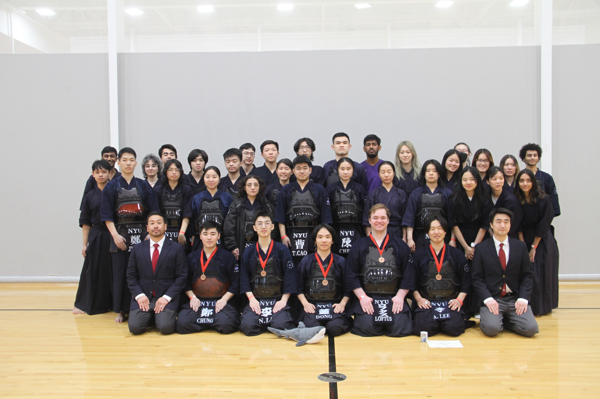
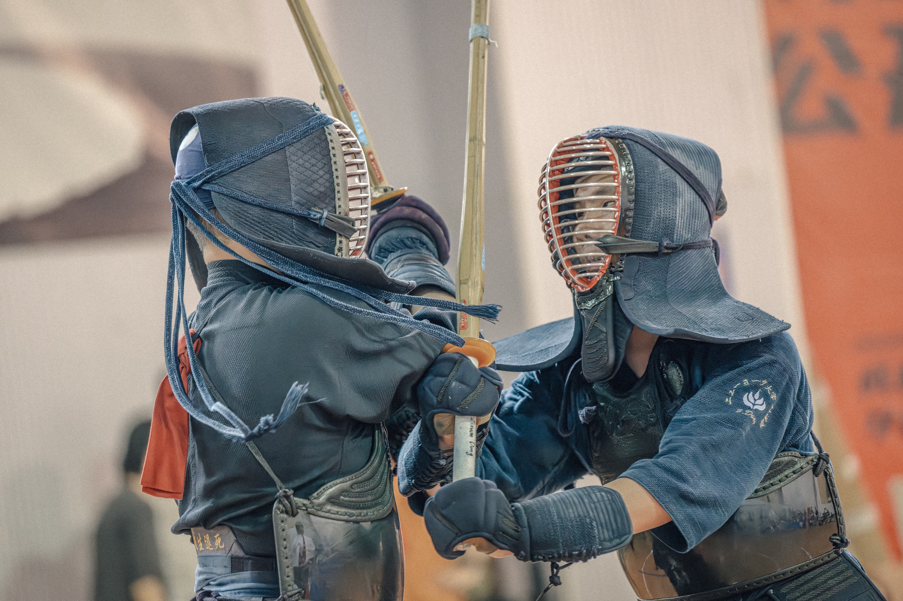
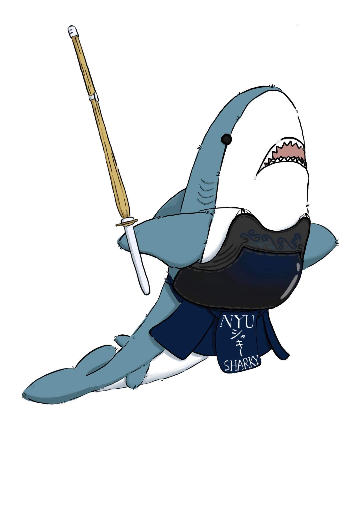
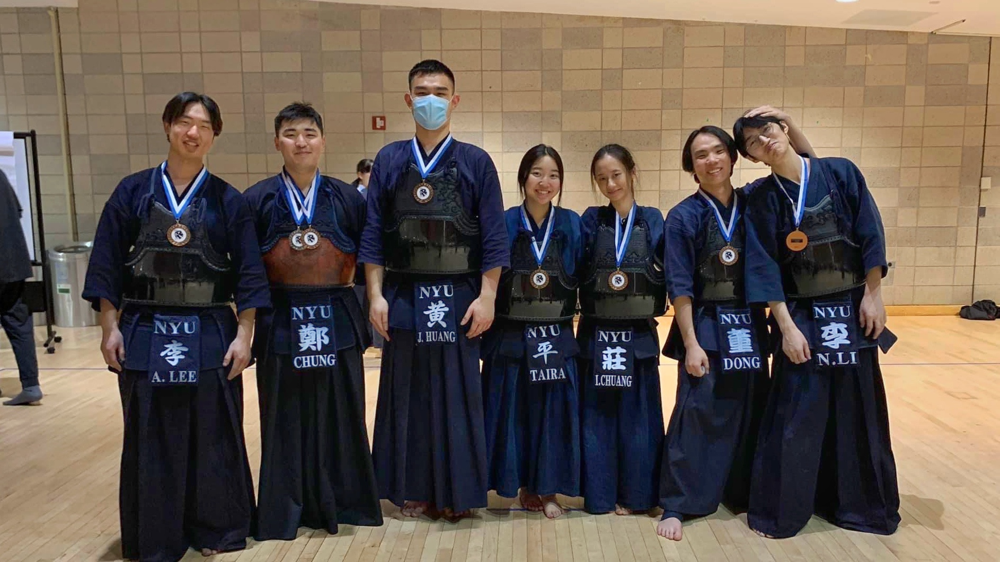

BUKai, Boston University
3rd place, team competition · Apr 2023
Outside of research.
I am a Kendo practitioner with a rank of 2 Dan. Here are some shining moments along my way of Kendo!

I spent an unforgettable time in the NYU Kendo Club with my friends, my teammates, and my sensei: we sweated side by side, fought face to face, and bowed heart to heart. Find more incredible moments from NYU Kendo members on the NYU Kendo Club website!


3rd place, team competition · Apr 2023

3rd place, team competition · Mar 2023
3rd place, team competition (Fukusho) · Mar 2022
The sword is the mind
剣とは心なり。
心正しければその剣正し。
心正しからざればその剣もまた正しからず。
剣を学ばんとするものはすべからくその心を学べ。